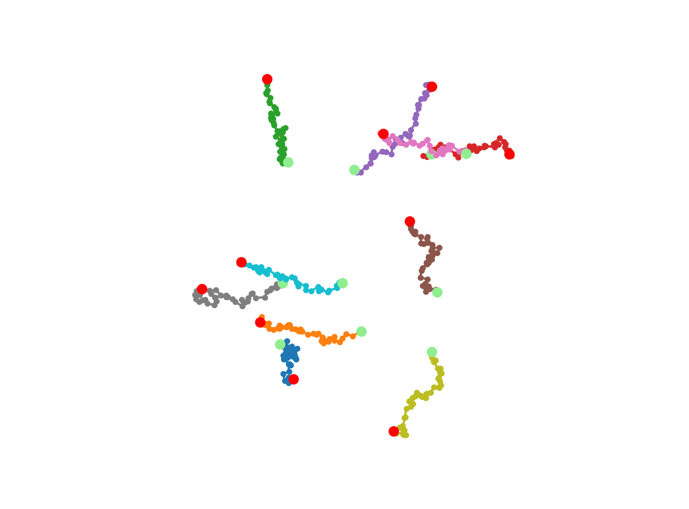

Package trackpal
TrackPal: Tracking Python AnaLyzer
A modular library for the analysis of object trackings in Python with pandas.
Overview
Main features
- Read Imaris / TrackMate files
- Simulate tracks with different motion types
- Compute track feature descriptors (~50 available features)
- Mean squared displacement curves for single tracks and ensembles
- Velocity autocorrelation curves for single tracks and ensembles
- Visualization utilities
For most computations trackpal relies on pandas groupby and apply mechanism.
TrackPal does not track or link objects. It analyzes already tracked objects.
For obtaining object trackings from images or detections see for instance the
excellent projects TrackMate,
trackpy or ilastik
Examples
import trackpal as tp
trj = tp.simulate.brownian_linear(n_tracks=10)
trj.groupby("TrackID").apply(
tp.visu.plot_trj, coords=["Position X", "Position Y"], line_fmt=".-",
)
Output: 
Track features
- Simulate different motion types and compute track feautures
Mean squared displacement curves
- Calculate diffusion constant and velocity from different simulated motion types
Installation
- Install Anaconda Python (>=3.6) and create new environment
From PyPi:
pip install TrackPal
For development
git clonethis repostiorycd trackpalpip install -e .
Documentation
Sub-modules
trackpal.drifttrackpal.features-
Module for track feature descriptors.
trackpal.fit-
Helper functions for fitting lines and parabolas.
trackpal.msd-
Mean square displacement
trackpal.read-
Reading tracks from Imaris (.csv) and TrackMate (.xml)
trackpal.simulate-
Simulate 2D tracks with various motion types
trackpal.utils-
General helper and utility functions
trackpal.velocity-
Velocity auto-correlation
trackpal.versiontrackpal.visu-
Track visualization
Functions
def concat_relabel(trj_list, trackid=None)-
Concatenates tracks and sequentially relabels the track id
Args
trj_list:list[pandas.DataFrame]- List of tracks to concatenate
trackid:str- trackid column identifier
Returns
pandas.DataFrame- Concatenated DataFrame with unique track ids